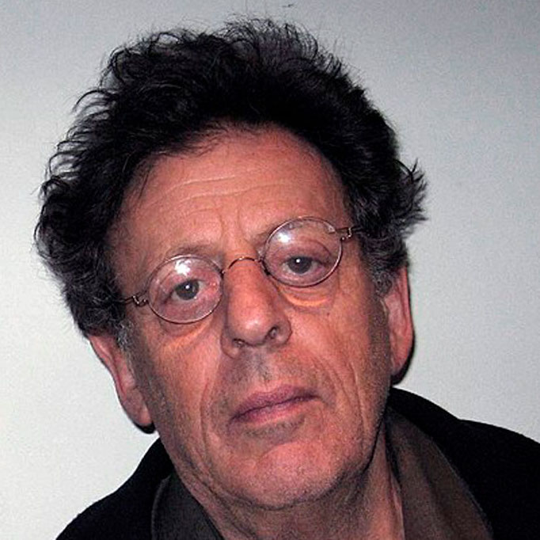
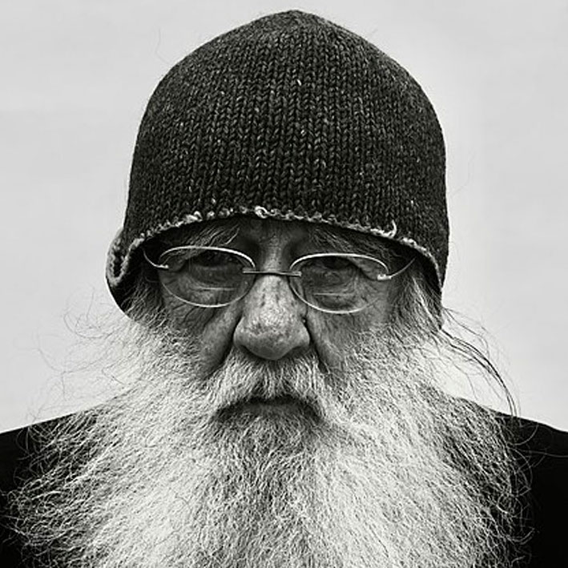

PHILLIP GLASS
2007, 70 ans
Phillip Glass est un compositeur américain de renom, il est l’un des pionniers de la musique minimaliste répétitive, bien qu’il s’en soit éloigné par la suite la considèrent comme ‘musique avec structures répétitive’. Il compose des musiques pour des opéras, des concertos, des films et des œuvres pour solistes.
GODFREY REGGIO
2022, 82 ans
KOYAANISQATSI
De Godfrey Reggio
Réalisé par Godfrey Reggio, Koyaanisqatsi est un film documentaire de 1h20 sans la moindre parole. Si cela peut paraitre abrupt au premier abord, c’est en vérité une expérience audiovisuelle captivante. C’est une cascade d’images montrant le côté austère de notre société actuelle, qui se révèle en une multitude d’interprétations. Le film débute sur des musiques aux notes lentes qui finissent par gagner en vitesse. Elles sontn devenues si populaires que des disques furent vendus et que Phillip Glass fit une tournée mondiale.